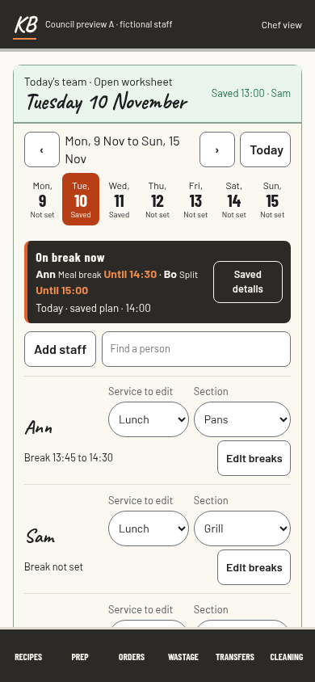

A · Open worksheet
Keep the week open. Edit breaks within each row. Save follows the people.

Try A · Chef panelHistorical council previews, 10 November 2026. The owner chose C; see the brief for implementation and delivery state. These use the same fictional day and staff, with separate Service to edit and Section controls, explicit membership changes and one dated Save.
Council brief and comparison · Current-page baseline. These sketches demonstrate local state and layout, not live permissions or persistence.